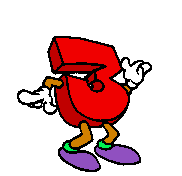

O número três é o grande símbolo da perfeição estrutural e do equilíbrio na história do pensamento humano, sendo o primeiro número ímpar primo e a base da menor figura geométrica capaz de fechar um espaço: o triângulo, a estrutura mais rígida e resistente de toda a engenharia civil.
<-Voltar Avançar->